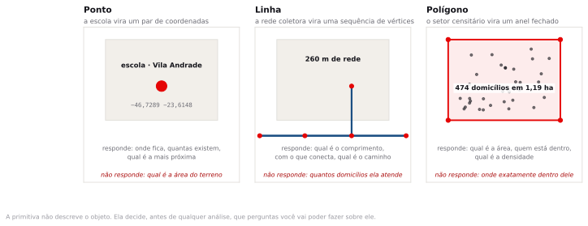
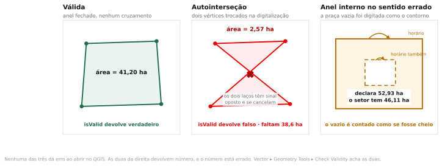
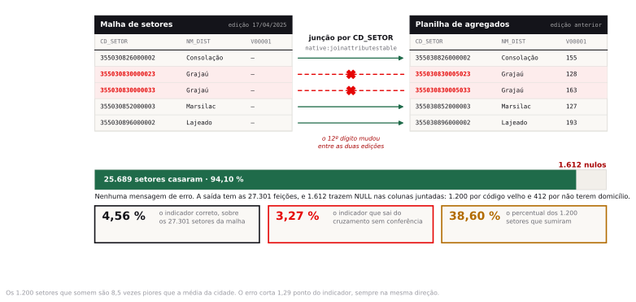
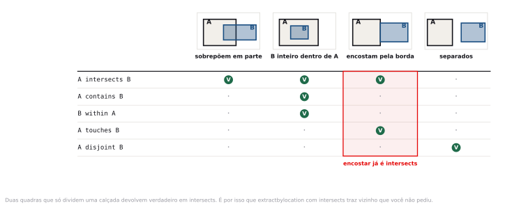
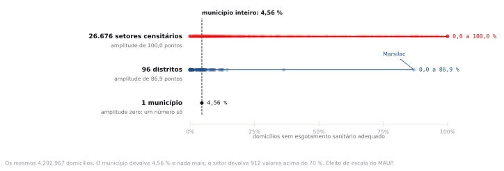

Preparação e dados
A leitura de preparação era o dicionário de variáveis dos agregados por setor censitário do Censo 2022. Se você não leu, abra agora e procure só uma coisa: quantas variáveis diferentes descrevem esgotamento sanitário, e por que elas não são uma só.
Crie a pasta InfoGeo/tema03_atributos com as subpastas dados_brutos e dados_tratados, do mesmo jeito dos dois temas anteriores. Salve o projeto vazio como projeto.qgz antes de carregar qualquer coisa.
python3 dados/baixar_dados_reais.py --semana 3- setores_sp_capital_2022.gpkg 27.301 setores censitários do município de São Paulo, polígono, EPSG:4674. Malha oficial do Censo 2022 com 37 campos: código de 15 dígitos, situação urbana ou rural, tipo de setor, distrito, área em km² e as variáveis v0001 a v0007.oficial
- agregados_esgoto_sp_capital_2022.csv 26.889 linhas e treze colunas, recortadas do arquivo oficial de características do domicílio: chave, distrito, total de domicílios, moradores e as oito variáveis V00309 a V00316 de destinação do esgoto. UTF-8, ponto e vírgula, decimal em vírgula, com osoficial
Xde sigilo preservados. - agregados_esgoto_sp_ed_anterior.csv Mesmas 26.889 linhas e os mesmos valores, mas 1.200 códigos de setor vêm de uma edição anterior da malha. ISO-8859-1. É a armadilha do passo 3, e você vai usá-la antes do arquivo bom.
- agregados_domicilio2_sp_capital_2022.csv O arquivo oficial inteiro de onde saiu o extrato: 26.889 linhas e 318 colunas, variáveis V00090 em diante, com esgotamento sanitário, abastecimento de água, banheiro e espécie do domicílio. 45 MB. Revisão de 17/04/2025.oficial
- agregados_domicilio1_sp_capital_2022.csv 26.889 linhas, variáveis V00001 a V00089: espécie e condição de ocupação do domicílio, moradores por faixa. É de onde vêm o total de domicílios e o de moradores usados no extrato.oficial
- agregados_basico_sp_capital_2022.csv 27.301 linhas do agregado básico por setor. Tem uma linha por setor da malha, inclusive os sem domicílio, e serve para conferir a contagem do passo 4. Revisão de 20/05/2026.oficial
- _recalcula_oficial.py Script que produz o extrato, o arquivo da edição anterior e todos os números citados nesta página. Semente fixa em 2022: rodar de novo reproduz os mesmos 1.200 códigos trocados.
- LEIA-ME.txt Origem de cada arquivo, dicionário das oito variáveis de esgoto e a lista dos números que o roteiro precisa reproduzir.
agregados_esgoto_sp_capital_2022.csv não é dado novo: são treze colunas copiadas do arquivo oficial de 45 MB, sem alterar um valor, para que a importação no QGIS caiba nos 45 minutos de roteiro. O agregados_esgoto_sp_ed_anterior.csv é o único arquivo construído para a aula, e existe para trazer 1.200 códigos de uma edição anterior da malha. A pasta ainda guarda dois arquivos de Belém, setores_belem_treino.gpkg e ubs_belem_treino.gpkg, de uma versão anterior do roteiro; nenhum passo desta página os usa. O dado oficial está no portal de agregados por setores censitários do IBGE e a malha correspondente em malhas territoriais.A prefeitura anuncia que 3,3% dos domicílios de São Paulo não têm esgotamento sanitário adequado. O número saiu de um cruzamento entre a malha de setores e a planilha do Censo, feito por um estagiário competente, sem nenhum erro de fórmula. O número certo é quase 40% maior. Onde está o erro?
Modelo vetorial, topologia e banco de dados geográfico
No tema anterior você mediu um polígono. Neste tema o polígono ganha uma tabela ao lado, e quase tudo o que um SIG faz de útil acontece na fronteira entre os dois: a geometria guarda a posição, a tabela guarda os valores. O que liga as duas é uma chave de texto, e é nessa chave que a análise territorial costuma quebrar primeiro.
Ponto, linha e polígono
O modelo vetorial tem exatamente três primitivas geométricas: ponto, linha e polígono. Um ponto é um par de coordenadas. Uma linha é uma sequência ordenada de pontos. Um polígono é uma linha que fecha sobre si mesma e delimita uma área.
A escolha da primitiva define, antes de qualquer análise, o que vai ser possível calcular, porque cada uma guarda um tipo diferente de informação geométrica.

Feição
Uma feição é o par formado por uma geometria e uma linha de tabela. Toda camada vetorial é uma lista de feições com a mesma primitiva e os mesmos campos. Quando você seleciona algo no mapa, seleciona a linha da tabela junto; quando seleciona a linha, o mapa acende. Não existe um sem o outro.
Topologia, e a geometria que dá número errado
Topologia é o conjunto das relações espaciais que sobrevivem a deformar o mapa sem rasgar: o que está dentro do quê, o que faz fronteira com o quê, o que está conectado a quê. Diferente de distância e de área, essas relações não dependem da projeção. Um lote dentro de um quarteirão continua dentro em qualquer sistema de coordenadas.
Uma geometria é válida quando obedece a um punhado de regras: o anel externo fecha, não cruza a si mesmo, e cada anel interno está inteiramente contido no externo. Uma geometria inválida não impede o arquivo de abrir nem de ser desenhado; o efeito aparece nas contas, porque as fórmulas de área e de interseção pressupõem anéis bem formados.

Se a autointerseção derruba a área para menos de um décimo do valor correto, por que esse erro sobrevive tanto tempo em bases reais?
Porque ninguém olha a área de um polígono isolado. Olha-se o total de uma camada com milhares de feições, e um valor que deveria ser 41 e vale 2 desaparece no somatório. O erro só aparece quando alguém compara o total com uma fonte independente, e aí já foi para dentro de um relatório.
No QGIS, Vector ▸ Geometry Tools ▸ Check Validity percorre a camada e separa as feições em válidas e inválidas. Rode isso em toda base que chegar de terceiros, antes de qualquer conta. Leva segundos e é a checagem com melhor relação entre esforço e prejuízo evitado deste curso.
A tabela de atributos é uma relação, não uma planilha
A tabela de atributos parece o Excel e não se comporta como o Excel. Cada linha corresponde a uma feição e a nada mais. Não existe célula mesclada nem linha de total no rodapé, e cada camada tem uma tabela só. A ordem das linhas não significa nada, e cada coluna tem um tipo declarado que o programa cobra.
Essa disciplina toda serve para uma coisa: permitir que a tabela seja cruzada com outra tabela por uma chave.
| Tipo de campo | O que aceita | Erro típico com dado brasileiro |
|---|---|---|
| Text (string) | Qualquer caractere, com comprimento máximo | Código de município ou de setor salvo como número perde a natureza de identificador e ganha aritmética que não faz sentido |
| Integer | Inteiro com sinal | O código de setor tem 15 dígitos e estoura o inteiro de 32 bits do Shapefile |
| Decimal (real) | Número com casas decimais | Arquivo brasileiro usa vírgula decimal; importado sem avisar, o campo vira texto |
| Date | Data com formato declarado | Dia e mês invertidos ao importar de fonte em inglês |
| Boolean | Verdadeiro, falso ou nulo | Confundir falso com nulo em consulta, e perder as linhas sem informação |
Chave primária e cardinalidade
Chave primária
Um campo, ou combinação de campos, cujo valor identifica uma única linha e nunca se repete. No Censo, a chave do setor censitário é o CD_SETOR, com quinze dígitos: sete de município, dois de distrito, dois de subdistrito e quatro de setor. Ele identifica um e só um setor no país inteiro.
Ao cruzar duas tabelas, a pergunta que decide tudo é quantas linhas de um lado correspondem a quantas do outro.
| Cardinalidade | Exemplo | O que acontece na junção |
|---|---|---|
| 1:1 | Um setor, uma linha de agregados | A camada de saída tem o mesmo número de feições da entrada. É o caso desta aula. |
| 1:n | Um setor, várias escolas dentro dele | Ou o QGIS duplica a geometria do setor uma vez por escola, ou descarta todas menos uma. Você escolhe na caixa Join type, e escolher errado muda o total. |
| n:1 | Vários setores, um mesmo município | Seguro. O atributo do município se repete em cada setor. |
| n:n | Setores e áreas de risco que se cruzam parcialmente | Não se resolve por junção de atributo. Exige interseção geométrica, que é a tema 5. |
Contar feições depois de uma junção 1:n e reportar o resultado como número de setores. Se 900 setores de São Paulo tiverem duas escolas cada, a camada passa de 27.301 para 28.201 feições, e somar a população dessa camada conta 900 setores duas vezes. O total infla e nada na tela indica isso.
Junções que falham sem erro
Aqui está o assunto central da aula. Quando duas tabelas são cruzadas por uma chave e um valor de chave não existe do outro lado, o SIG não reclama. Ele preenche as colunas trazidas com nulo e segue em frente. A camada de saída tem o número correto de feições e desenha normalmente na tela; o defeito só existe dentro das colunas, nas linhas em que a chave não casou.

Se as linhas que somem fossem aleatórias, a perda seria só de precisão. Elas quase nunca são. Códigos mudam quando um setor é subdividido, e setores são subdivididos onde a população cresceu rápido, que costuma ser a periferia em adensamento. As linhas perdidas se concentram, portanto, exatamente nas áreas onde o indicador tende a ser pior.
A malha de setores censitários do Censo 2022 foi republicada pelo IBGE em 17 de abril de 2025. Planilhas de agregados montadas antes dessa data podem trazer códigos que não existem mais na malha atual. Antes de cruzar, confira a data de publicação dos dois lados. Está no metadado, e vale mais do que qualquer verificação posterior.
Que checagem de trinta segundos teria pegado esse erro?
Contar quantas linhas ficaram com nulo depois da junção. No QGIS é uma expressão de seleção: "V00001" IS NULL. Se o resultado não for zero, e você esperava 1:1, pare tudo. Essa contagem é a taxa de casamento, e ela reaparece no tema 7 com o nome de taxa de match, quando o assunto for geocodificação. Cuidado com a leitura fácil: nulo pode ter causa inocente. No passo 5 você vai encontrar 412 nulos legítimos, de setores sem nenhum domicílio, e eles não mexem no indicador.
Toda junção termina com três números anotados: quantas feições entraram, quantas casaram e quantas ficaram nulas. Sem esses três números, não há como defender o resultado quando alguém o questionar.
Consulta por atributo
Selecionar por atributo é fazer uma pergunta em linguagem de expressão e receber de volta um subconjunto de feições. A linguagem do QGIS é própria, parecida com SQL sem ser SQL. Nome de campo entre aspas duplas, texto entre aspas simples.
"PCT_SEM" > 70 -- setores críticos "NM_DIST" = 'Marsilac' -- aspas simples para texto "NM_DIST" IN ('Parelheiros', 'Marsilac') -- lista "NM_DIST" LIKE 'Jardim%' -- prefixo "V00001" IS NULL -- o que a junção não trouxe "PCT_SEM" > 70 AND "V00005" > 1000 -- crítico e populoso left("CD_SETOR", 9) = '355030855' -- setores de um distrito
Escrever "V00001" != NULL. Em lógica de banco de dados, qualquer comparação com nulo devolve nulo, que não é verdadeiro. A forma correta é "V00001" IS NOT NULL. Esse detalhe faz sumir silenciosamente as linhas que você queria contar.
Consulta por localização e os predicados topológicos
A outra família de consulta não usa a tabela. Usa a geometria. Você pergunta quais feições de uma camada guardam determinada relação espacial com as feições de outra, e a relação é escolhida entre um conjunto pequeno de predicados definidos formalmente.

intersects, porque compartilham pontos de fronteira. É por isso que uma extração por localização com intersects traz vizinhos que você não pediu, e por que within costuma ser o predicado certo quando a pergunta é "está dentro".Você quer contar quantos setores críticos estão no distrito de Parelheiros. Usa intersects ou within?
Para pontos estritamente no interior dos polígonos os dois devolvem o mesmo conjunto. A diferença explode quando a camada de origem também é de polígonos, que é o caso do passo 8: perguntar quais setores críticos estão em Parelheiros devolve 167 com within e 190 com intersects, porque 23 setores de Marsilac e do Grajaú encostam na divisa do distrito. Escolher o predicado é declarar o que você quer dizer por "estar em".
O setor censitário é uma escolha administrativa
O setor censitário não corresponde a bairro, quarteirão ou comunidade: é a área que um recenseador consegue percorrer no prazo do Censo. O IBGE dimensiona o setor urbano por número de domicílios, e o desenho segue o que facilita o trabalho de campo: uma rua, um córrego, um muro. Em São Paulo a mediana ficou em 154 domicílios por setor, com nove em cada dez entre 40 e 290.
A consequência é que a unidade de análise foi desenhada por conveniência operacional, e não pela geografia do fenômeno que você quer estudar. O traçado da rede de esgoto não guarda nenhuma relação com a divisa do setor 355030883000364.

Problema da unidade de área modificável
Resultados estatísticos calculados sobre unidades territoriais dependem de como essas unidades foram desenhadas. Mudar o tamanho das unidades muda o resultado, e mudar o traçado sem mudar o tamanho também muda. Em inglês, modifiable areal unit problem, ou MAUP. Você vai ver a formalização dos dois efeitos na aula 4 e usá-la de novo na aula 6.
Se o resultado depende do desenho das unidades, e o desenho é arbitrário, o número serve para alguma coisa?
Serve, com a unidade declarada junto. "4,56% dos domicílios de São Paulo", "912 setores acima de 70%" e "86,94% em Marsilac" são três afirmações verdadeiras sobre a mesma cidade. O que não se pode fazer é comparar um número calculado por setor com outro calculado por distrito e chamar a diferença de mudança na realidade.
Dado um par de tabelas e uma junção já executada, a prova pode pedir que você diagnostique por que o cruzamento falhou e estime a direção do viés que isso introduz. Pode também pedir a escolha do predicado topológico adequado a um enunciado, ou a identificação do efeito do MAUP em uma conclusão apresentada como se fosse do fenômeno.
Do CSV ao quarteirão, no QGIS
Os números abaixo são exatos e saem do pacote que você baixou. Se o seu QGIS mostrar outra coisa, pare no ponto de conferência mais próximo e descubra qual passo saiu diferente antes de seguir.
Carregar a malha e olhar a tabela antes de tudo
- Abra o QGIS e crie um projeto novo. Salve como
InfoGeo/tema03_atributos/projeto.qgz. - Vá em Project ▸ Properties ▸ General e, em Measurements, defina o elipsoide como GRS 1980 e a unidade de área como Hectares. Você aprendeu isso no tema 2 e vai precisar no exercício.
- Arraste
setores_sp_capital_2022.gpkgpara dentro da janela. São 27 MB e a primeira abertura demora alguns segundos. - Clique com o botão direito na camada, escolha Zoom to Layer, e adicione a conexão OpenStreetMap que você cadastrou no tema 1, pelo painel Browser, em XYZ Tiles. Se ela não aparecer, refaça o passo 5 do Encontro 1.
- Abra a tabela de atributos com
F6e leia os nomes das colunas. Ordene porAREA_KM2clicando no cabeçalho.
A camada tem 27.301 feições e 37 campos. O rodapé da tabela mostra 27301 total. Nenhuma coluna diz quantos domicílios têm esgoto: a malha traz geometria, identificação e sete variáveis de contagem de pessoas e domicílios, v0001 a v0007. Os nomes de distrito aparecem com acento correto, porque o GeoPackage é UTF-8 por construção. Ordenado por área, o maior setor tem 41,87 km² e fica em Marsilac, no extremo sul; o menor tem 246 m², na Sé. Os dois valem uma linha de tabela cada.
O IBGE marca em CD_TIPO o que o setor é. O valor 0 é setor comum, 1 é favela e comunidade urbana, 4 é setor de baixo patamar domiciliar, 6 é unidade prisional, 7 é convento, hospital ou instituição de longa permanência. Os 412 setores que não vão casar no passo 5 são quase todos do tipo 4, e isso muda completamente a leitura do nulo.
Importar o CSV, resolvendo encoding, separador e decimal
Arquivo de texto de origem pública brasileira quase nunca vem no padrão que o software espera. A planilha que você vai abrir agora usa ponto e vírgula entre campos e vírgula como separador decimal, do mesmo jeito que o IBGE distribui os agregados, e está gravada em Latin-1, a codificação em que boa parte dos órgãos públicos ainda publica.
- Vá em Layer ▸ Add Layer ▸ Add Delimited Text Layer.
- Em File name, aponte para
agregados_esgoto_sp_ed_anterior.csv. Sim, o da edição anterior. É de propósito. - Deixe primeiro o Encoding em
UTF-8e olhe o quadro de amostra na parte de baixo da janela.
Jardim Ângela aparece como Jardim ?ngela ou Jardim �ngela, e Brasilândia, Capão Redondo e Sé quebram do mesmo jeito. O arquivo não está corrompido: você pediu ao QGIS que lesse bytes Latin-1 como se fossem UTF-8. Troque Encoding para ISO-8859-1 e os acentos voltam na hora.
- Preencha o resto da janela conforme abaixo.
- Layer name
- agregados_ed_anterior
- Encoding
- ISO-8859-1
- File format
- Custom delimiters · Semicolon
- Number of header lines to discard
- 0
- First record has field names
- marcado
- Detect field types
- marcado
- Decimal separator is comma
- marcado
- Geometry definition
- No geometry (attribute only table)
- Clique Add e depois Close. A tabela entra no painel de camadas com um ícone diferente, sem geometria.
- Abra a tabela e confirme os tipos: passe o mouse sobre o cabeçalho de
MEDIA_MORADORESe depois sobre o deV00311.
A tabela tem 26.889 linhas e treze colunas. MEDIA_MORADORES é decimal, com valores em torno de 3,0; se tiver virado texto, você esqueceu de marcar Decimal separator is comma, então remova a camada e importe de novo. Já as oito colunas V00309 a V00316 chegam como texto, e desta vez está certo: elas contêm 13.323 células com a letra X.
O X é o marcador de sigilo estatístico do IBGE. Aparece onde a contagem é tão pequena que publicá-la permitiria identificar o informante, e nesta tabela ele sempre esconde um valor entre 1 e 8. Somadas, as células suprimidas escondem 14.342 domicílios dos 4.307.309 da cidade, 0,33% do total. Aqui vamos tratar X como zero e declarar isso no relatório. Quem tratar como nulo perde a linha inteira na soma, o que é bem pior.
Campo numérico importado como texto não dá erro. Ele ordena "1000" antes de "9", faz o Field Calculator recusar a operação, e em alguns caminhos concatena em vez de somar. Todo problema desta família nasce no diálogo de importação e só é percebido três passos depois. É por isso que o passo 6 embrulha cada variável em to_int.
A junção que parece ter dado certo
- Abra a caixa de ferramentas de processamento com
Ctrl+Alt+T. - Procure por
Join attributes by field value, cujo identificador énative:joinattributestable. - Preencha assim.
- Input layer
- setores_sp_capital_2022
- Table field
- CD_SETOR
- Input layer 2
- agregados_ed_anterior
- Table field 2
- CD_SETOR
- Layer 2 fields to copy
- V00001, V00005, V00309 a V00316
- Join type
- Take attributes of the first matching feature only (one-to-one)
- Discard records which could not be joined
- desmarcado
- Joined layer
- dados_tratados/setores_join_ruim.gpkg
- Clique Run. Com 27.301 feições isso leva perto de meio minuto. Leia a janela de log até o fim e depois feche.
O log informa quantas feições foram unidas e quantas não foram, sem nenhum destaque, entre outras linhas de execução. A camada nova entra no projeto com 27.301 feições, desenha igual à original e não tem nenhuma marca visual de problema. Se você fechar o log sem ler, e a maioria fecha, segue tudo em frente.
Deixe Discard records which could not be joined desmarcado sempre. Marcado, ele apaga as feições que não casaram e a camada de saída passa a ter menos feições, o que remove a única pista visível de que algo deu errado.
Medir a taxa de casamento e achar o culpado
Agora a checagem de trinta segundos que muda o resultado da aula.
- Selecione
setores_join_ruime abra a tabela de atributos. - Clique no ícone de seleção por expressão, ou use Edit ▸ Select ▸ Select Features by Expression.
- Escreva a expressão e clique Select Features.
"V00001" IS NULL
O rodapé da tabela mostra 1.612 feições selecionadas de 27.301. A taxa de casamento é 25.689 de 27.301, ou 94,10%. Nenhuma mensagem de erro apareceu em momento algum.
- Com as 1.612 selecionadas, clique no botão que mostra apenas as feições selecionadas e olhe as colunas
NM_DISTev0001, esta última minúscula, que é a população do setor segundo a própria malha. - Volte ao mapa. As 1.612 estão realçadas em amarelo.
Os nulos não estão espalhados. Grajaú responde por 138, Parelheiros por 117, Marsilac por 40, Brasilândia por 38, Cidade Tiradentes e Jardim Ângela por 36 cada. Nenhum setor da Consolação, de Pinheiros ou do Jardim Paulista. É a periferia inteira e nada do centro expandido. O motivo é o mesmo que gera a falha: setores subdivididos entre uma edição e outra da malha, e a subdivisão acontece onde a população cresceu rápido.
- Para ver a chave de perto, compare um código dos dois lados. Abra
agregados_ed_anteriore procure por355030843005915. Depois procure355030843000915na malha. São o mesmo setor do Jardim Ângela em duas edições, e diferem no décimo segundo dígito, o primeiro dos quatro que numeram o setor dentro do subdistrito. - Antes de seguir, limpe a seleção e remova
setores_join_ruimdo projeto.
Dos 1.612 nulos, 412 vão continuar nulos no passo 5, com o arquivo certo. Os outros 1.200 são a falha de chave. O passo 5 mostra como separar os dois casos, e é essa separação que a prova pode cobrar.
Refazer com o arquivo da edição certa
- Importe
agregados_esgoto_sp_capital_2022.csvcom os mesmos parâmetros do passo 2, mudando só o Encoding paraUTF-8, que é como o IBGE publica hoje. Nomeie a camadaagregados_2022. - Rode
native:joinattributestablede novo, trocando Input layer 2 paraagregados_2022e gravando emdados_tratados/setores_esgoto.gpkg. - Repita a seleção por expressão
"V00001" IS NULLna camada nova.
412 feições selecionadas, e não zero. A taxa de casamento é 26.889 de 27.301, ou 98,49%. Antes de comemorar ou de se desesperar, olhe a coluna v0001 da malha nesses 412: soma zero moradores. Some agora as colunas trazidas pelo painel de estatísticas, em View ▸ Panels ▸ Statistics: V00001 soma 4.307.309 domicílios e V00005 soma 11.394.071 moradores.
Os 412 que sobraram são setores sem domicílio particular permanente ocupado: 367 deles têm CD_TIPO igual a 4, o código de baixo patamar domiciliar, e o resto é parque, área industrial, presídio ou instituição. O IBGE não publica agregado de domicílio para eles porque não há domicílio a agregar. Esses 412 não mexem em nada no indicador, porque entram com zero no numerador e no denominador. Os 1.200 do passo 4 mexiam, e muito. A contagem de nulos, sozinha, não distingue um caso do outro: é preciso olhar o CD_TIPO e a população dos setores que não casaram.
Com o arquivo errado, o indicador da cidade sairia em 3,27%. Com o certo, sai em 4,56%. A diferença de 1,29 ponto parece pequena e não é: em termos relativos, o cruzamento errado apagou 28% do problema. Os 1.200 setores perdidos tinham 38,60% de domicílios sem esgotamento adequado, oito vezes a média da cidade, então a falha empurrava o número sempre na mesma direção. Em domicílios, são 60.335 casas sem esgotamento adequado que sumiriam da conta.
Construir o indicador com o Field Calculator
O Censo não publica um campo "sem esgoto". Publica oito destinos possíveis para o esgoto do banheiro, e a definição de adequado é uma escolha metodológica que você precisa fazer de forma explícita.
| Campo | Destinação do esgoto do banheiro ou sanitário | Classificação |
|---|---|---|
V00309 | Rede geral ou rede pluvial | adequado |
V00310 | Fossa séptica ou fossa filtro ligada à rede | adequado |
V00311 | Fossa séptica ou fossa filtro não ligada à rede | inadequado |
V00312 | Fossa rudimentar ou buraco | inadequado |
V00313 | Vala | inadequado |
V00314 | Rio, lago, córrego ou mar | inadequado |
V00315 | Outra forma | inadequado |
V00316 | Não tinham banheiro nem sanitário | inadequado |
- Selecione
setores_esgoto, entre em modo de edição comCtrl+Ee abra o Field Calculator comCtrl+I. - Marque Create a new field, nome
DOM_TOT, tipo Whole number (integer). As colunas vieram como texto por causa dosX, então cada uma precisa passar porto_int, e ocoalescetransforma em zero o que não é número.
coalesce(to_int("V00309"),0) + coalesce(to_int("V00310"),0) +
coalesce(to_int("V00311"),0) + coalesce(to_int("V00312"),0) +
coalesce(to_int("V00313"),0) + coalesce(to_int("V00314"),0) +
coalesce(to_int("V00315"),0) + coalesce(to_int("V00316"),0)
- Crie
DOM_INAD, também inteiro, com as seis últimas parcelas da expressão acima, deV00311aV00316. - Crie
PCT_SEM, Decimal number (real), comprimento 10, precisão 2. Oifevita a divisão por zero nos setores sem domicílio.
if("DOM_TOT" > 0, "DOM_INAD" / "DOM_TOT" * 100.0, NULL)
- Crie também
PCT_ADEQ, comif("DOM_TOT" > 0, 100.0 - "DOM_INAD" / "DOM_TOT" * 100.0, NULL). - Salve as edições e desligue o modo de edição.
- Aplique uma simbologia graduada rápida: botão direito na camada, Properties, aba Symbology, Graduated, campo
PCT_SEM, cinco classes, Classify.
No painel de estatísticas com o campo PCT_SEM: o mínimo é 0,00%, o máximo é 100,00% e há 625 nulos, que são os 412 sem agregado mais 213 setores cujas oito variáveis somam zero. Trezentos e oito setores estão em 100%, e o maior deles é o 355030811000446, na Brasilândia, com 206 domicílios e 672 moradores. O indicador da cidade não é a média dos setores: é DOM_INAD somado dividido por DOM_TOT somado, que dá 4,56%, ou 195.714 domicílios em 4.292.967.
Reportar a média aritmética de PCT_SEM como percentual da cidade. Isso dá 5,82% aqui, quase um ponto e meio acima do valor correto, porque a média de percentuais trata um setor de 42 domicílios em Anhanguera como igual a um de 474 na Vila Andrade. O percentual da cidade é uma razão de somas, não uma média de razões. Repare que desta vez o erro inflaria o número: o viés da média simples não tem direção fixa, depende de onde estão os setores pequenos.
Selecionar os setores críticos e exportar
- Com
setores_esgotoativa, abra Edit ▸ Select ▸ Select Features by Expression. - Use a expressão e clique Select Features.
"PCT_SEM" > 70
912 feições selecionadas de 27.301. Com a seleção ativa, o painel de estatísticas em modo Selected features only mostra V00005 somando 282.993 pessoas, que é 2,48% dos 11,4 milhões da cidade, e DOM_TOT somando 93.735 domicílios, dos quais 81.515 sem esgotamento adequado. A soma de AREA_KM2 dá 332,8 km², ou 21,9% do território municipal.
2,48% da população em 21,9% da área. Os setores críticos de São Paulo são grandes e vazios porque estão no cinturão de mananciais do extremo sul e nas bordas de mata do norte, onde a densidade é baixa. Um mapa que pintasse só esses polígonos daria a impressão de um problema enorme; um número que citasse só a população daria a impressão de um problema desprezível. Os dois estão certos, e um relatório honesto apresenta os dois lado a lado.
- Botão direito na camada, Export ▸ Save Selected Features As.
- Preencha a janela conforme abaixo.
- Format
- GeoPackage
- File name
- dados_tratados/setores_criticos.gpkg
- Layer name
- setores_criticos
- CRS
- EPSG:4674 — SIRGAS 2000
- Encoding
- UTF-8
- Save only selected features
- marcado
- Add saved file to map
- marcado
O corte em 70% é seu, não dos dados. Baixando para 50% a seleção sobe para 1.314 setores e 446.796 pessoas; subindo para 90% cai para 477 setores e 119.358 pessoas. Um secretário municipal com orçamento para trinta obras escolheria outro limiar, e um promotor de justiça montando ação civil pública escolheria um terceiro. Anote qual você usou e por quê, do mesmo jeito que anota o CRS.
Quantos setores críticos estão em Parelheiros, e o que "estar em" quer dizer
Agora a consulta por localização, que não olha a tabela. A pergunta parece trivial e não é: a resposta muda conforme o predicado que você escolhe.
- Selecione
setores_esgotoe faça uma seleção por expressão com"NM_DIST" = 'Parelheiros'. São 455 setores. - Exporte a seleção com Export ▸ Save Selected Features As para
dados_tratados/parelheiros.gpkg. - Na caixa de ferramentas, rode
Dissolve, de identificadornative:dissolve, sobreparelheirossem campo nenhum em Dissolve field(s), gravando emdados_tratados/parelheiros_limite.gpkg. Sai um polígono só, o contorno do distrito. - Procure
Extract by location, de identificadornative:extractbylocation, e preencha conforme abaixo.
- Extract features from
- setores_criticos
- Where the features are
- are within
- By comparing to the features from
- parelheiros_limite
- Extracted
- dados_tratados/criticos_parelheiros.gpkg
- Rode e leia a contagem de feições da camada de saída.
- Rode de novo, trocando apenas Where the features are para intersect, e compare.
Are within devolve 167 setores. Intersect devolve 190. Os 23 de diferença não estão em Parelheiros: são 13 setores de Marsilac e 10 do Grajaú que encostam na divisa do distrito e, por compartilharem pontos de fronteira, satisfazem intersects. Se o seu relatório disser "190 setores críticos em Parelheiros", ele está errado em 14%, e ninguém vai notar olhando o mapa.
Usar intersect por ser o predicado que aparece primeiro na lista. Ele é o mais permissivo dos cinco e quase sempre devolve mais do que você pediu. Quando a pergunta é "está dentro de", o predicado é are within. Quando é "encosta em", é touch. Escolher errado não produz mensagem de erro: produz um número diferente, que segue adiante sem nenhuma marca de problema.
282.993 pessoas em 912 setores, espalhadas por 55 dos 96 distritos
Os 912 setores críticos concentram 2,48% da população da cidade em 21,9% do território, e os 167 que estão dentro de Parelheiros respondem sozinhos por 14.236 domicílios e 43.818 moradores. A pergunta do tema pedia "em qual quarteirão", e o roteiro devolveu 912 polígonos com código de quinze dígitos, distrito e contagem de domicílios. É esse nível de detalhe que transforma uma estatística em ordem de serviço.
Exercício
Saneamento ruim pesa diferente conforme a densidade: num setor esvaziado é um problema de cobertura, num setor adensado vira risco sanitário imediato, porque o esgoto a céu aberto convive com muita gente. Os 912 setores críticos do passo 7 são quase todos do primeiro tipo. Vamos procurar o segundo.
- Na camada
setores_esgoto, crie o campoDENS_DOM, decimal com precisão 4, usando"DOM_TOT" / ("AREA_KM2" * 100). Sai em domicílios por hectare. Se quiser conferir, compare o denominador com$area, que agora devolve hectares porque você definiu o elipsoide no passo 1. - Abra o painel de estatísticas e anote a mediana de
DENS_DOMe a mediana dePCT_SEM. - Olhe para a segunda mediana antes de continuar. Ela vai atrapalhar o plano óbvio, e o que você faz a partir daí é metade do exercício.
- Selecione por expressão os setores que estão acima da mediana de densidade e que tenham pelo menos um domicílio sem esgotamento adequado.
- Com a seleção ativa, leia no painel de estatísticas quantos setores são, quantos moradores vivem neles e que fração isso representa da população da cidade.
Depois responda, em quatro linhas:
- Por que a mediana de
PCT_SEMnão serve como corte, e que outro critério você usaria no lugar? - Que distritos aparecem mais nessa seleção, e por que a combinação densidade alta com saneamento ruim é pior do que cada uma das duas isoladamente?
- Compare a lista de distritos desta seleção com a lista dos 912 setores críticos do passo 7. São as mesmas regiões? O que isso diz sobre priorizar obra por percentual?
A mediana de DENS_DOM é 69,2868 domicílios por hectare. A mediana de PCT_SEM é 0,00, e o terceiro quartil também: 21.682 setores, ou 81,3% dos que têm domicílio, não têm nenhuma casa sem esgotamento adequado. Um corte pela mediana degenera em "qualquer valor maior que zero". A expressão "DENS_DOM" > 69.2868 AND "PCT_SEM" > 0 seleciona 2.443 setores, com 453.029 domicílios, 105.403 deles sem esgotamento adequado, e 1.307.270 moradores em 38,2 km², ou 11,47% da população da cidade. Grajaú aparece 180 vezes, Jardim Ângela 127, Cidade Ademar 115, Jardim São Luís 105, Brasilândia 101 e Capão Redondo 96. Trocando a mediana pelo terceiro quartil de densidade, 132,9735 domicílios por hectare, sobram 935 setores e 544.525 moradores, e a lista muda de cara: Cidade Ademar 59, Campo Limpo 57, Vila Andrade 52, Jardim São Luís 50. Use ponto como separador decimal dentro da expressão, mesmo que a tabela mostre vírgula.
Fechamento
4,56% dos domicílios, e não 3,3%. A diferença veio de 1.200 setores que a junção descartou sem avisar, e eram justamente os piores.
O estagiário não errou nenhuma fórmula. Ele cruzou uma malha publicada em abril de 2025 com uma planilha montada antes disso, e 94,10% das linhas casaram. Os 5,9% que faltaram tinham 38,60% de domicílios sem esgotamento adequado, oito vezes a média da cidade: 60.335 casas apagadas da conta. Nenhuma ferramenta reclamou, porque, do ponto de vista do programa, nada de anormal aconteceu.
E a pergunta pedia o quarteirão: são 912 setores, com 282.993 pessoas, espalhados por 55 distritos e concentrados em Parelheiros, Grajaú, Marsilac, Cidade Tiradentes, Jaraguá e Jardim Ângela. Em Marsilac o problema não é de setor, é de distrito inteiro: 86,94% dos domicílios de lá não têm esgotamento sanitário adequado.
O que discutir com a turma
Três perguntas para os últimos minutos.
Uma taxa de casamento de 94% é aceitável?
Depende inteiramente de quem sumiu. Se os 5,9% faltantes fossem sorteados entre 27 mil setores, o efeito sobre a média seria desprezível. Aqui eles não foram sorteados: são os piores. Repare que a taxa de 98,49% do arquivo certo, que parece pior do que 100%, não introduz viés nenhum, porque os 412 nulos de lá têm zero domicílio. A taxa sozinha não responde; o que decide é se o que faltou se parece com o que ficou.
Classificar fossa séptica não ligada à rede como inadequada é uma escolha técnica ou política?
As duas coisas, e vale reconhecer isso em voz alta. Existe argumento sanitário dos dois lados, e o percentual de São Paulo cai de 4,56% para 3,76% conforme a definição, o que muda 34.331 domicílios de lado. Quem publica o número tem obrigação de declarar a definição junto; quem lê tem obrigação de perguntar por ela.
Se o setor censitário foi desenhado para caber na rotina do recenseador, faz sentido usá-lo como unidade de política pública de saneamento?
- Você contou domicílios sem esgotamento adequado, e não pessoas doentes. A relação entre as duas coisas existe e não é de um para um; medi-la exige dado de saúde que não está aqui.
- O setor censitário informa quantos domicílios estão em situação inadequada, e não quais. Dentro do setor 355030883000364, na Vila Andrade, com 474 domicílios e 355 sem esgotamento adequado, você não sabe qual rua tem rede e qual não tem. O Censo não desce abaixo do setor, por sigilo estatístico.
- Os 13.323
Xforam tratados como zero, e por baixo deles há até 14.342 domicílios. É pouco na cidade inteira, 0,33%, e pode ser muito num setor específico onde quatro das oito colunas estão suprimidas. Nenhum passo mediu esse efeito setor a setor. - Todo indicador aqui usa o domicílio como unidade. Um setor com 474 domicílios e outro com 42 pesam igual quando você olha o mapa, porque a cor não é ponderada por tamanho. Isso é assunto da aula 4.
- A geometria foi tratada como correta. Nenhum passo rodou Check Validity sobre a malha, e em base oficial vale rodar antes de qualquer coisa.
- Os 912 setores críticos são grandes e pouco povoados. Nada aqui diz quanto custa levar rede até eles, e a resposta depende de topografia, distância à rede existente e restrição de área de manancial. Isso não é geoprocessamento de atributo; é projeto de engenharia.